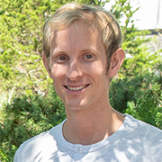

benjamin dot scellier at polytechnique dot org

I am a machine learning research scientist.
My current research interests lie at the interface of machine learning (ML) and physics. I am more particularly interested in physics-based computation and physics-based learning.
Much of my current research revolves around equilibrium propagation (EP), a learning framework grounded in physical principles. Unlike the more conventional ML framework based on automatic differentiation ("backpropagation"), EP performs inference and extracts gradient using the same physical laws, which makes it a potentially useful framework for the design of energy-efficient hardware for ML.
For a very brief introduction to EP, see these notes. (For a more detailed introduction to EP, Chapter 2 of my PhD thesis may be relevant) For EP-related code, click here. If you are interested in EP, feel free to reach out.